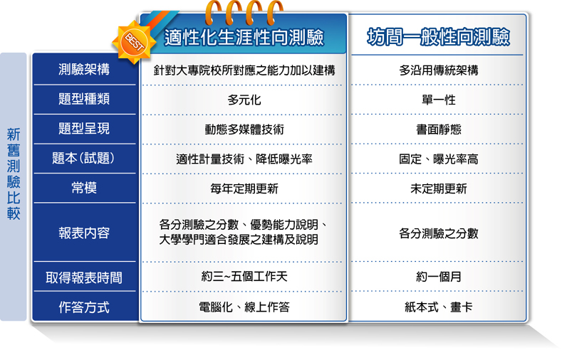

-
- 什麼是適性化生涯性向測驗?
- 性向測驗（aptitude test）是用來測量個人能力和潛能的一種工具，多用在學生自我探索、生涯抉擇或企業篩選人才等。 然而，現有性向測驗之施測方式多為紙本，計分方面需透過人力或是讀卡機制，且在試題方面為固定試題。 但隨著使用年限增加，出現試題曝光率之問題，在題型與內容方面也未加以擴充或更新，導致性向測驗其試題老舊、題型受限，因而未能發揮於測量個人潛能之效果。 因此結合電腦化、多媒體和計量技術所編製之「適性化生涯性向測驗」，可同時測量學生多面向之潛能。 透過本測驗，可提供青少年瞭解其自身之優勢能力，將有助於學生探索與掌握自我、培養生涯決策與規劃能力、進行生涯準備與生涯發展。 而適當的生涯發展測驗將能提供多元訊息，亦可作為教師與家長進行生涯輔導之工具。

-
- 本測驗的特色與優勢
- 一、新架構與新題型的開發
有別於過去測驗向度，新開發之測驗架構，融入大學各學門所需之能力，在新開發之測驗架構方面，增加了創意、美感及外語等分測驗。 在題型設計上，透過電腦做為媒介，採更多元且更能貼近所欲測量之能力的方式進行試題開發。如：美感測驗使用拖曳題型來測量學生對於美的感受。
二、適性技術
透過電腦化適性測驗（computerized adaptive testing, CAT）的技術，讓受試者只需透過較少的題數就能達到與傳統測驗相同的測量精準度。
三、快速取得測驗結果
透過測驗系統，學生能在最短的時間得到測驗結果，學校教師能於線上系統直接印製測驗報告，縮短取得報表的時間。
四、全國常模定期更新
將有效的結果資料納入常模計算，定期更新常模，以確保測驗對個人分數的解釋力。
五、提供客製化常模
能夠針對各校、地區或特別需求提供常模資料。
六、針對測驗結果提供大學學門之建議
提供受試者自身之個別性向組型與類群建議，增加兩者媒合的效度，作為受試者進行生涯抉擇之參考工具。
-
- 常模
- 本測驗施測對象為臺灣各公立高中二年級之男女學生，抽樣母群乃根據教育部公布之101年高級中學學校名錄，建立學校名單。 抽樣方式採分層隨機抽樣。施測時間為民國101年10月中旬至民國102年4月下旬結束，資料收集完畢後，即進行分析。 並於民國102年10月透過立意取樣，進行小規模施測。施測學校依地區為北部19所、中部5所、南部9所以及東部1所，共計施測34間學校。 總有效施測人數為2702人。性別部分的分布是男生1317人（49%）、女生1385人（51%）。
-
- 研發與製作
- 版權所有人：宋曜廷教授
由國立臺灣師範大學心理與教育測驗研究發展中心及數位學習研究室共同開發。